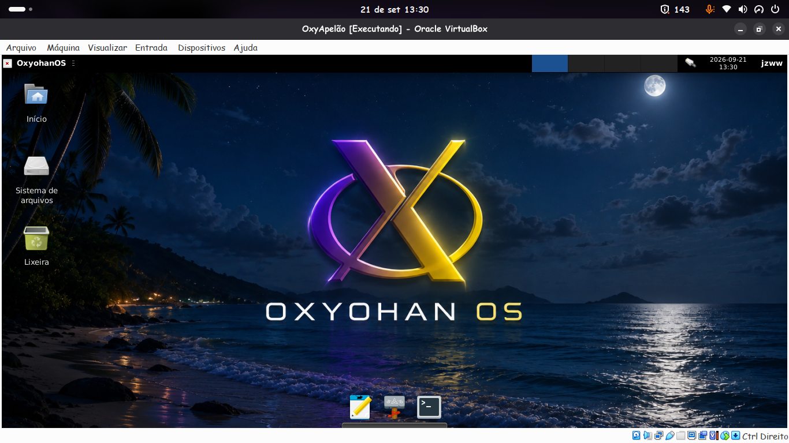
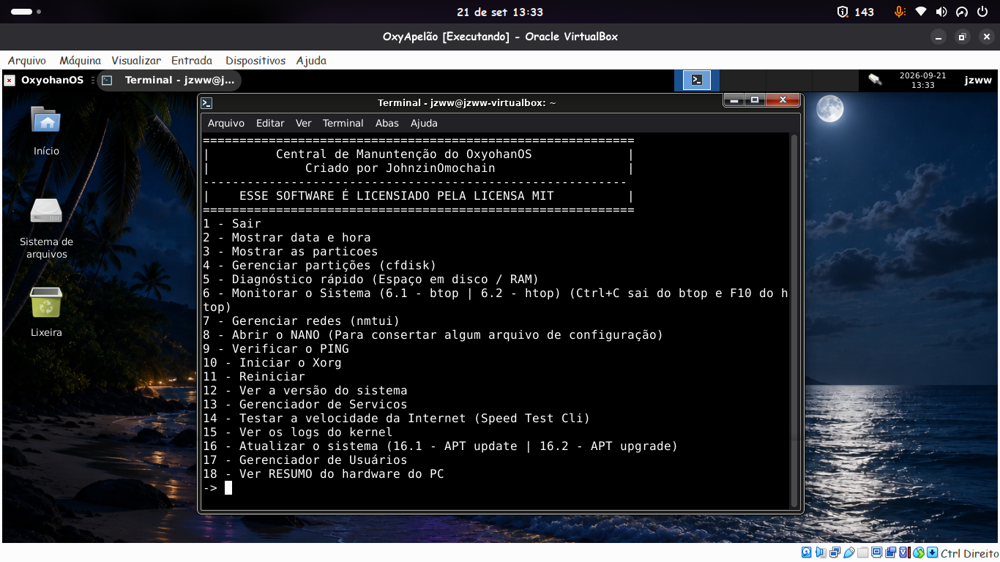

Compillada em 21 de setembro de 2026, essa é a primeira build instalável do OxyohanOS
Essa build implementou o fundo Low Cortisol, que é um fundo praiano com a logo do
OxyohanOS, também temos outros fundos como o Muro e Waves além do clássico
Também implementa o Plank como dock, substituindo o Dock do XFCE que era feio
e o AeroMashup e os icones Tango se mantiveram, trazendo uma experiência bonita e
frutigger aero

Também implementa a Central de Manuntenção do Oxyohan que está em sua versão
também pré-release que te permite gerenciar o sistema, monitorá-lo, diagnostica-lo e
conserta-lo. E não podemos esquecer do OS-pkg, que é um instalador rolling release
de apps .App image
Tem download no site OFICIAL do OxyohanOS, então vê lá nos downloads
